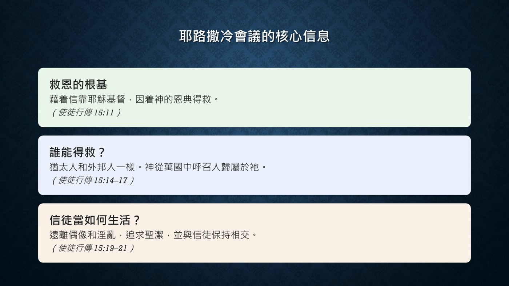
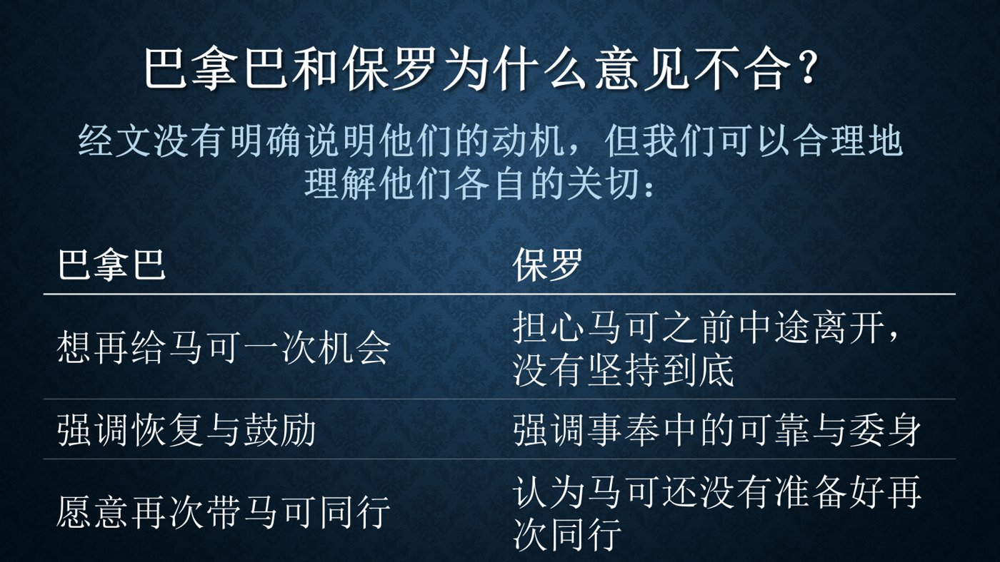

不应当难为那些归服神的外邦人。 使徒行传 15:19
本次查经聚焦于使徒行传 15:13-44，围绕第一次耶路撒冷会议的决议展开：救恩惟独藉着信靠耶稣基督、本乎神的恩典而得，与割礼或摩西律法无关。会议确认，外邦人不必成为犹太人才能得救，并为外邦信徒提供了四项实践性的指引。本章以保罗和巴拿巴因马可的问题而分道扬镳作结，客观上使福音的工作得以传到更广泛的地区。
决议与核心教导
耶路撒冷会议的三大结论
- 救恩的根基：救恩惟独本乎神的恩典，藉着信靠耶稣基督——不是靠行为，不是靠遵守摩西律法，不是靠割礼，也不是靠生为犹太人。
- 谁能得救：救恩并不局限于犹太人。外邦人和地上万国万民都可以得救。神的拣选没有种族上的偏袒。
- 基督徒的生活方式：信主之后，信徒蒙召要远离偶像崇拜、淫乱和其他罪恶，追求圣洁的生活，并彼此相爱、彼此相交。

四项实践指引
这四项原则并不是得救的条件，而是为了帮助外邦信徒与异教文化划清界线：
- 戒绝祭过偶像的食物：不吃献给异教偶像的食物，因为这与偶像崇拜、淫乱及其他邪恶的仪式相关联。
- 戒绝淫乱：异教的宗教仪式常常伴随着淫乱；信徒蒙召要与这类行径彻底断绝关系。
- 戒绝勒死的牲畜的肉：牲畜必须以正当的方式宰杀；自然死亡或被勒死的，不可食用。
- 戒绝血：血代表生命，按照当时的传统，是不可食用的。
主要讨论议题
会议的背景：争议的起因
保罗和巴拿巴结束第一次宣教旅程回到安提阿之后，有些来自耶路撒冷的犹太基督徒前来对外邦信徒说："你们若不受割礼、不遵守摩西的律法，就不能成为真正的基督徒。"这种强加于人的教导在安提阿教会中造成了分裂，促使保罗和巴拿巴前往耶路撒冷，与使徒和长老们商议此事——第一次耶路撒冷会议由此而生。
彼得的见证
彼得站起来，提醒会众哥尼流一家归主的事：这些外邦人虽然没有受割礼，也没有遵守摩西的饮食律法，神却将圣灵赐给了他们。彼得的结论是：圣灵降在外邦人身上，正如降在五旬节的犹太信徒身上一样，因此强迫外邦人遵守律法是错误的。
巴拿巴和保罗的见证
巴拿巴和保罗也作了见证，述说第一次宣教旅程中神藉着他们在外邦人中间所行的神迹奇事，会众便都静默无声。
雅各的总结发言
雅各（耶稣的兄弟，而不是十二使徒中的那位雅各）作了关键性的总结发言：
- 神对外邦人的拣选并不是新出现的事，而是从创造之初就在神计划之中，并且早已由旧约先知预言。
- 引用旧约：神应许要重新建造大卫倒塌的帐幕——这是弥赛亚所要建立之国度的预表，不仅为以色列人，也为万国万民。
- "为神的名"的神学意义：神拣选以色列，是要藉着他们彰显祂的荣耀、权能和慈爱，使全地都知道耶和华是独一的真神。同样，神今天拣选基督徒，是要我们在世上作盐作光，反映神的性情，吸引更多人认识并荣耀祂。
大卫帐幕的预表意义
大卫王国及其圣殿，是神未来国度的预表。大卫王朝随着国家分裂为南北两国而终归倾覆，但神应许要藉着弥赛亚耶稣基督使之复兴。神的国度已经藉着耶稣的复活开始了（"已然，但未然"）——当信徒在爱中聚集时，神的国就在他们中间——然而其完全的实现，仍有待基督的再来以及新天新地的建立。
关于饮食规定的延伸讨论
保罗在书信中重新谈到祭偶像之物的问题，原因如下：
- 在一世纪的外邦世界中，市场上出售的肉类大多来自异教的祭坛，因此完全戒绝，几乎等同于吃素。
- 保罗区分了"强"信徒与"弱"信徒：与强信徒在一起时，可以吃；但若有弱信徒在场，就应当为了顾念他们而戒食，免得使他们跌倒。
- 关键原则：这些饮食规定与救恩无关；核心关切在于体贴并爱别人。
- 一个现代的类比：正如在穆斯林地区传福音的宣教士，可能选择不吃猪肉，以赢得当地人的信任——这是爱的表现，而不是得救的条件。
假教导与真理的对比
假教导与真教导所结的果子截然不同：
- 假教导产生纷争、混乱与分裂；真理／纯正的教导产生和平、合一与喜乐。
- 假教导把重担加在人身上（例如律法主义）；真理带来自由与平安。
- 假教导扰乱教会；真理坚固教会。
当载有耶路撒冷会议决议的信函被带到安提阿，并向会众宣读时，外邦信徒大大欢喜，教会也恢复了平安。这一对比在今天依然同样适用：任何使人陷入混乱、捆绑或极端的教导，都不是出于神；真正出于神的真理，使人得自由，赐人平安。
犹大和西拉的角色：新约先知的职分
耶路撒冷教会特意拣选犹大（又称巴撒巴）和西拉随同使团前往安提阿，原因是：
- 保罗和巴拿巴本来就是这场争议的当事人，仅由他们二人来传达会议的决议，缺乏可信度。
- 需要来自耶路撒冷的权威见证人，亲自确认决议的内容。
圣经称犹大和西拉为先知。讨论中区分了旧约与新约中先知职分的不同：
- 旧约的先知：主要带来警告，宣告神因以色列人的悖逆而施行的审判与刑罚。
- 新约的先知：其主要功能转向劝勉与鼓励，坚固信徒持守神的话语。
保罗与巴拿巴的分歧
分歧的起因
保罗提议进行第二次宣教旅程——目的不是开拓新的地区，而是回访已经建立的教会，了解信徒的属灵光景，并给予鼓励和教导（因为当时新约圣经尚未写成，信徒很容易在纯正教义上产生混乱）。两人在是否带马可同行的问题上发生了尖锐的分歧：
- 保罗：马可在第一次旅程中途无故离开了事工——这是严重的失职——不应再带他同行。
- 巴拿巴：坚持要再给马可一次机会，愿意陪伴他，帮助他重新投入事奉。

两种领导风格的解读
这场分歧并非对与错之争，而是反映了两种不同的领导性格与事工重点：
- 保罗：以目标为导向、讲原则，注重委身与问责——是确立大方向的开拓型领袖。
- 巴拿巴（他的名字本身就是"劝慰子"之意）：温和谦卑，擅长鼓励和挽回他人，愿意给人第二次机会——这与他早先的性格完全一致：保罗归主之后，众人仍然惧怕他，唯独巴拿巴接纳了他。
结果与神的护理
巴拿巴带着马可坐船往塞浦路斯去；保罗则拣选了西拉，走遍叙利亚和基利家，坚固众教会。从更高的角度来看，这次分道扬镳使两个团队能够涵盖更多的地区、探访更多的教会，客观上扩大了事工的范围——或许正是照着神的美意。
问答要点
问题一：保罗在宣教旅程中在哪里传道？
- 城里凡有会堂的地方，保罗都会在安息日（星期六）前往，因为那里聚集着对信仰有兴趣的犹太人和敬畏神的外邦人。
- 在星期日，他会参加基督徒的聚会（早期教会通常在家中聚会）。
- 在哲学文化浓厚的城市（如雅典），他还会在市场上与人辩论信仰。
- 现代的弥赛亚犹太人（信了基督的犹太人）有时也保持类似的模式：星期六去会堂，星期日去教会。
问题二：早期教会有等级制度吗？
教会的秩序，与世俗组织的等级结构有着根本的不同：
- 世俗组织：权柄来自职级与职位（等级制）。
- 教会：权柄来自圣灵的引导和属灵的恩赐。耶稣基督是教会的元首；任何单一的领袖都无权独断专行。
- 教会设有牧师、传道人和执事等角色——这些代表的是恩赐与功能的不同，而不是地位或等级的不同。
- 重大决定应由领袖和会众在圣灵的引导下共同作出；任何领袖都不可强迫会众。
- 早期教会的组织架构尚未完全成形；保罗和巴拿巴的分歧并不是等级权柄的冲突，而是同工之间如何处理不同意见的问题。
- 一间健康的教会应当展现：秩序、彼此相爱、敬拜中的喜乐，以及和谐的合一——这些都是圣灵同在的标记。